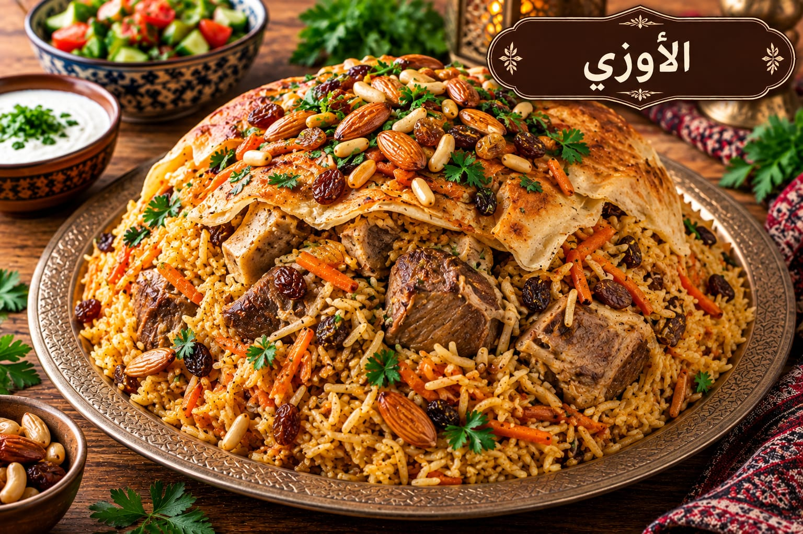

الأوزي
أرز متبل بالبازلاء واللحم

مقادير الأوزي
- 3 أكواب أرز بسمتي
- 300 غ لحم مفروم
- 1 كوب بازلاء
- 1 كوب جزر مكعبات
- ½ كوب لوز
- 2 ملعقة كبيرة سمنة
- 1½ ملعقة صغيرة ملح
- 1 ملعقة صغيرة بهار مشكل
- ½ ملعقة صغيرة فلفل أسود
- 4½ أكواب مرق
طريقة عمل الأوزي
- حمري اللحم بالسمنة ثم أضيفي البازلاء والجزر والبهارات.
- اغسلي الأرز وانقعيه 20 دقيقة ثم صفيه وأضيفيه للقدر.
- أضيفي المرق الساخن والملح، وبعد الغليان خففي النار 18–20 دقيقة.
- أطفئي النار وأريحي الأرز 10 دقائق ثم فلّفيه وزينيه باللوز.